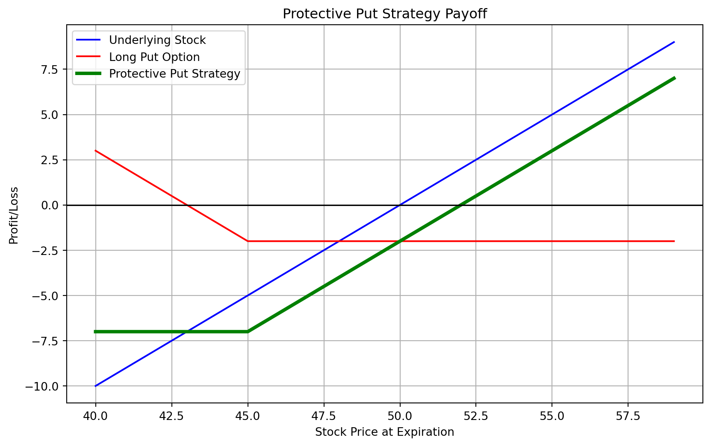

Pirie, W. L., and M. P. Kritzman. 2017. Derivatives. CFA Institute Investment Series.
Chapter 8 - Risk Management Applications of Option Strategies
Learning outcomes:
Compare the use of covered calls and protective puts for risk management.
Calculate/interpret values for option strategies including bull spread, bear spread, butterfly spread, collar, straddle, box spread.
Determine the effective annual rate for an anticipated loan managed with interest rate options.
Calculate payoffs for a floating rate loan combined with an interest rate cap, floor, or collar.
Explain delta hedging for dealers, including adjustments and why delta changes.
Interpret the gamma of a delta-hedged portfolio and explain how gamma changes with options moving toward expiration.
4.1 Introduction
Definition
Options are financial contracts that provide the buyer with the right, but not the obligation, to buy (call option) or sell (put option) an underlying asset at a predetermined price (strike price) within a specific time frame. The seller is obligated to fulfill the contract if the buyer exercises the option.
Options feature non-linear payoffs and require an upfront premium.
They allow for gains from favorable price movements while limiting losses from unfavorable ones.
Sellers bear the risk of substantial losses and must be adequately compensated.
4.1.1 Notation and Assumptions
Assumptions:
The option user has a view on underlying asset movements or volatility.
Options are European-style and customized.
Strategies cannot be terminated early.
Time notation:
Time \(0 \dots\): Strategy initiation.
Time \(t \dots\): Option expiration, expressed as a fraction of a year.
Time until expiration: \(t - 0 = t = \frac{\text{Days to expiration}}{365}\).
Symbol definitions:
\(c_0, c_t \dots\) Call option prices at time \(0\) and time \(t\).
\(p_0, p_t \dots\) Put option prices at time \(0\) and time \(t\).
\(X \dots\) Strike price.
\(S_0, S_t \dots\) Underlying asset prices at time \(0\) and time \(t\).
\(V_0, V_t \dots\) Value of the position at time \(0\) and time \(t\).
\(\Pi \dots\) Profit from the transaction (\(V_t - V_0\)).
\(r \dots\) Risk-free rate.
4.2 Option Strategies for Equity Portfolios
While these strategies can be applied to various asset classes, they are primarily discussed in the context of equity investments or equity indices.
Define long and short positions in call and put options.
Calculate the profit and value of an option.
Determine the maximum potential profit or loss for each position.
4.2.2 Covered Call
A covered call strategy involves owning the underlying asset (e.g., stocks) and selling call options on that asset. The primary goal is to generate additional income from the option premium, which the investor retains whether the option is exercised or not.
Covered calls reduce the risk of a position, countering the assumption that options always increase risk.
While reducing risk, this strategy also limits the potential for returns compared to simply holding the stock.
In bull markets, covered calls cap gains, but in bear markets, the option premium provides some protection against losses.
The payoff structure for a covered call can be summarized as follows:
A protective put strategy involves owning an asset (e.g., stocks) and purchasing a put option on that same asset. The goal is to limit downside risk by ensuring that if the asset’s price falls, the gains from the put option will offset the loss from the asset.
This strategy provides downside protection while allowing for upside potential, though the cost of the put option reduces the net profit.
Protection against large losses can be expensive, and the buyer must be willing to sacrifice some upside.
Protective puts are often likened to an insurance policy for the underlying asset.
The protective put’s payoff structure is summarized as follows:
Suppose you own 100 shares of Company XYZ, currently trading at $50 per share. You decide to implement a protective put strategy by purchasing one put option (covering 100 shares) with a strike price of $45 for a premium of $2 per share.
\[
\text{Profit} = \text{Profit from shares} + \text{Profit from option}
\]
If the share price rises to $60, the put option is not exercised:
import numpy as npimport matplotlib.pyplot as plt# Variablesstock_price =50strike_price =45premium =2shares =100# Stock price range for the graphstock_price_range = np.arange(40, 60, 1)# Underlying stock payoff calculationstock_payoff = stock_price_range - stock_price# Put option payoff calculation (for long position)put_payoff = ( np.where(stock_price_range <= strike_price, strike_price - stock_price_range, 0)- premium)# Protective put payoff calculationprotective_put_payoff = stock_payoff + put_payoff# Plottingplt.figure(figsize=(10, 6))plt.plot(stock_price_range, stock_payoff, label="Underlying Stock", color="blue")plt.plot(stock_price_range, put_payoff, label="Long Put Option", color="red")plt.plot( stock_price_range, protective_put_payoff, label="Protective Put Strategy", color="green", linewidth=3,)plt.axhline(y=0, color="black", linewidth=1.2)plt.xlabel("Stock Price at Expiration")plt.ylabel("Profit/Loss")plt.title("Protective Put Strategy Payoff")plt.legend()plt.grid(True)plt.show()

4.2.4 Money Spreads
In options trading, “money spreads” or “spreads” refer to strategies that involve buying and selling options of the same class (e.g., calls or puts) on the same underlying asset but with different strike prices and/or expiration dates. These strategies aim to reduce risk or lower the initial cost of entering a position.
Spreads are categorized based on how they generate profits or losses, with common types being:
Vertical Spreads:
Bull Call Spread: Buy a call with a lower strike price and sell a call with a higher strike price, both expiring at the same time.
Bull Put Spread: Sell a put with a higher strike price and buy a put with a lower strike price.
Bear Put Spread: Buy a put with a higher strike price and sell a put with a lower strike price.
Bear Call Spread: Sell a call with a lower strike price and buy a call with a higher strike price.
Horizontal Spreads (Calendar Spreads):
Involve options with the same strike price but different expiration dates.
Diagonal Spreads:
Combine vertical and horizontal elements, using different strike prices and expiration dates.
Iron Condor:
A combination of two vertical spreads (one using calls, the other using puts) with the same expiration but different strike prices.
Butterfly Spread:
Constructed using three strike prices, typically with calls or puts. Can be a call butterfly or put butterfly.
The profit and loss from these strategies depend on the underlying asset’s price at expiration relative to the options’ strike prices. Money spreads help target a specific range of price movement, generally involving lower risk but also offering limited profit potential compared to outright options positions.
4.2.5 Collars
A collar strategy is a defensive option strategy used by investors with a long position in an underlying asset, aiming to protect against potential losses. It involves three key components:
Owning the Underlying Asset: The investor holds shares of a stock or another asset.
Buying a Put Option: The investor buys a put option with a strike price below the asset’s current price, setting a floor for potential losses. This put acts as insurance.
Selling a Call Option: Simultaneously, the investor sells a call option with a strike price above the asset’s current price, generating premium income that can offset the cost of the put. However, this caps the upside if the asset’s price rises above the call’s strike price.
The combination of these elements forms a “collar” around potential profits and losses:
Protection from Loss: The put option limits downside risk by compensating for losses if the asset’s price falls.
Limitation on Profit: The sold call limits upside potential, as gains are capped when the price rises above the call’s strike price.
Cost Mitigation: The premium from the sold call helps offset the cost of the purchased put, often making the strategy cost-effective or even cost-neutral.
This strategy is commonly used by investors with significant gains in the underlying asset who wish to protect those gains without selling the asset. By selecting different strike prices and expiration dates, investors can tailor the collar to their risk preferences and market outlook.
4.2.6 Straddle
A straddle is a neutral options strategy that involves buying or selling a call option and a put option with the same strike price and expiration date on the same underlying asset. It is used when an investor expects significant price movement but is uncertain about the direction.
Long Straddle: This strategy is suited for investors who anticipate high volatility but are unsure whether the price will rise or fall. The cost is the total premium paid for both options, and the profit potential is unlimited.
Short Straddle: This strategy is for investors who expect minimal price movement. The profit is limited to the premiums received, but the risk can be significant if the asset’s price moves sharply in either direction.
Strangle: A variation of the straddle where the call and put options have different strike prices—typically, the call’s strike price is above and the put’s strike price is below the current asset price. It can also be implemented as a long or short strategy.
The straddle is commonly employed around events like earnings announcements or other significant news that may cause substantial price swings. It allows investors to potentially profit from volatility itself, without needing to predict the direction of the price movement.
4.3 Interest Rate Option Strategies
Interest rate options use an interest rate as the underlying asset, typically based on a 90- or 180-day instrument. These options are primarily used to hedge against changes in interest rates.
A call option is exercised if the underlying interest rate exceeds the exercise rate.
A put option is exercised if the underlying interest rate falls below the exercise rate.
The notional principal determines the payoff when the option is exercised.
Payoff is delayed by a period corresponding to the life of the underlying instrument.
The interest rate is determined on the option’s expiration date, but the actual payment occurs \(m\) days later, a standard practice for managing the risk of floating-rate loans.
For different LIBOR rates at expiration, the maximum effective rate is 7.79% (if the option is exercised). If the option is not exercised, the effective rate decreases.
A similar analysis applies to lending using interest rate put options. A lender can buy a put that pays off if the interest rate falls below a specified level, compensating for the lower interest on the loan. Equations for puts are adjusted slightly, but the overall structure remains the same.
4.3.1 Floating-Rate Cap, Floor, and Collar
Many corporate loans are structured as floating-rate loans, with periodic interest payments that reset based on market rates, creating several distinct risks.
Interest Rate Calls (Caplets):
Borrowers can use multiple call options (caplets) to place a ceiling on their borrowing rates.
Each caplet has its own expiration date, although the exercise rates are usually uniform.
A combination of these caplets forms a cap.
Interest Rate Puts (Floorlets):
Lenders may be concerned about declining rates and can purchase puts (floorlets) that expire on rate reset dates.
A series of these puts is referred to as a floor.
Interest Rate Collars:
A collar involves a long position in a cap and a short position in a floor.
A zero-cost collar occurs when the premium received from selling the floor equals the cost of buying the cap, making it appear cost-neutral, though the borrower forfeits potential gains from falling rates.
Borrowers typically buy caps and sell floors, while lenders might do the opposite, purchasing floors and selling caps.
Collars are frequently initiated by borrowers to hedge against fluctuating interest rates.
4.4 Option Portfolio Risk Management Strategies
Dealers provide liquidity in options markets by taking on risk temporarily and hedging positions to earn the bid-ask spread without bearing long-term exposure. When a customer buys a call option, the dealer sells it, creating a short call position, which carries significant risk. The dealer may attempt to offset this risk by finding a counterparty or using put-call parity, but often they rely on delta hedging to manage the position.
4.4.1 Delta Hedging
Delta measures the sensitivity of an option’s price to changes in the underlying asset price, typically between 0.0 and 1.0.
A short call position can be hedged by holding a long position in the underlying asset, with the size of the long position proportional to the option’s delta.
For every call option sold, the dealer must hold an equivalent number of shares multiplied by the option’s delta.
Challenges with Delta Hedging:
Approximation: Delta is an approximation that changes as the underlying price or time to expiration changes, leading to potential mismatches.
Rounding: The number of shares to hedge per option may not be an exact match, leading to imprecision.
Continuous Monitoring: Delta hedging requires frequent adjustments, especially when the underlying price fluctuates significantly.
4.4.2 Gamma Hedging
Gamma measures the rate of change of delta relative to changes in the underlying asset’s price.
High gamma indicates that delta will change more rapidly with price movements, increasing the risk of the delta hedge becoming ineffective.
Role in Hedging:
A delta-hedged position is only risk-free when gamma is zero.
Large gamma implies greater sensitivity to price changes, which makes the position more difficult to manage.
Gamma is highest for at-the-money options nearing expiration and lower for deep in-the-money or out-of-the-money options.
To reduce gamma risk, dealers often use gamma hedging, which involves adjusting the portfolio by adding another option to balance both delta and gamma.
4.4.3 Vega and Volatility Risk
Vega measures an option’s sensitivity to changes in the volatility of the underlying asset.
Volatility is a crucial factor in option pricing, and changes in volatility can significantly impact an option’s value, even if the position is delta-hedged.
An increase in volatility raises the price of options, which can lead to losses for a dealer holding the underlying asset and selling options.
At-the-money options are more sensitive to volatility changes, making vega a key concern for dealers managing such positions.
Dealers hedge vega risk by taking positions in other options, but managing delta, gamma, and vega simultaneously requires careful monitoring and adjustments to maintain a balanced portfolio.
4.5 Practice Questions and Problems
Stanley Singh, CFA, is the risk manager at SS Asset Management. Singh works with individual clients to manage their investment portfolios. One client, Sherman Hopewell, is worried about how short-term market fluctuations over the next three months might impact his equity position in Walnut Corporation. While Hopewell is concerned about short-term downside price movements, he wants to remain invested in Walnut shares as he remains positive about its long-term performance. Hopewell has asked Singh to recommend an option strategy that will keep him invested in Walnut shares while protecting against a short-term price decline. Singh gathers the information in the following table to explore various strategies to address Hopewell’s concerns.
Current stock Price: $67.79
Walnut Corporation European options:
Exercise Price
Market Call Price
Call Delta
Market Put Price
Put Delta
$55.00
$12.83
4.7
$0.24
–16.7
$65.00
$3.65
12.0
$1.34
–16.9
$67.50
$1.99
16.5
$2.26
–15.3
$70.00
$0.91
22.2
$3.70
–12.9
$80.00
$0.03
35.8
$12.95
–5.0
Note: Each option has 106 days remaining until expiration.
Another client, Nigel French, is a trader who does not currently own shares of Walnut Corporation. French has told Singh that he believes that Walnut shares will experience a large move in price after the upcoming quarterly earnings release in two weeks. However, French tells Singh he is unsure which direction the stock will move. French asks Singh to recommend an option strategy that would allow him to profit should the share price move in either direction.
A third client, Wanda Tills, does not currently own Walnut shares and has asked Singh to explain the profit potential of three strategies using options in Walnut: a bull call spread, a straddle, and a butterfly spread. In addition, Tills asks Singh to explain the gamma of a call option. In response, Singh prepares a memo to be shared with Tills that provides a discussion of gamma and presents his analysis on three option strategies:
Strategy 1: A straddle position at the $67.50 strike option
Strategy 2: A bull call spread using the $65 and $70 strike options
Strategy 3: A butterfly spread using the $65, $67.50, and $70 strike call options
The option strategy Singh is most likely to recommend to Hopewell is a:
collar.
covered call.
protective put.
The option strategy that Singh is most likely to recommend to French is a:
straddle.
butterfly.
box spread.
Based upon the table, strategy 1 is profitable when the share price at expiration is closest to:
$63.24.
$65.24.
$69.49.
Based upon the table, the maximum profit, on a per share basis, from investing in strategy 2, is closest to:
$2.26.
$2.74.
$5.00.
Based upon the table, and assuming the market price of Walnut’s shares at expiration is $66, the profit or loss, on a per share basis, from investing in strategy 3, is closest to:
-$1.57.
$0.42.
$1.00.
Based on the data in the table, Singh would advise Tills that the call option with the largest gamma would have a strike price closest to: